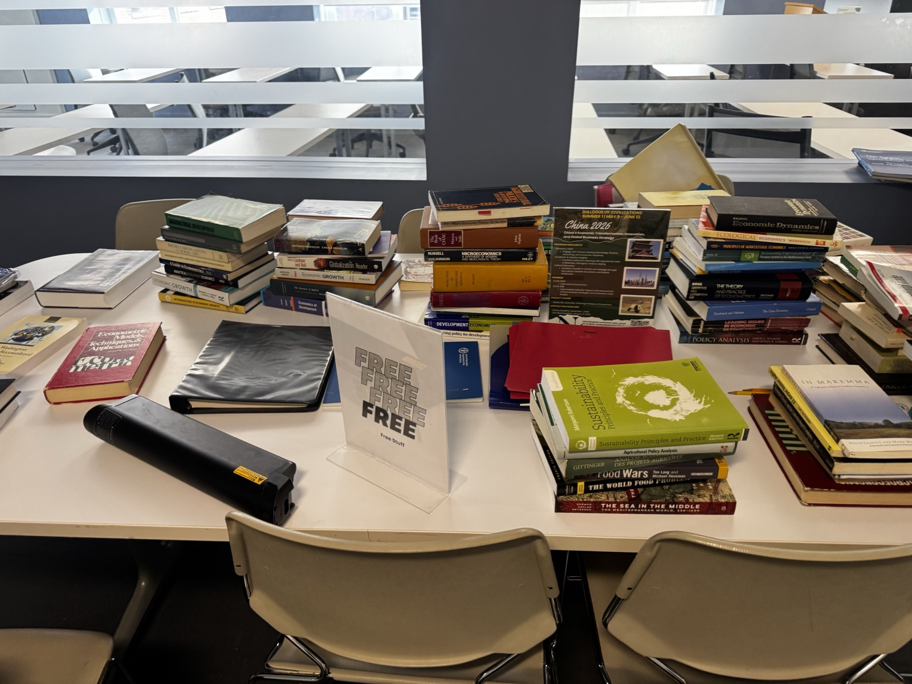
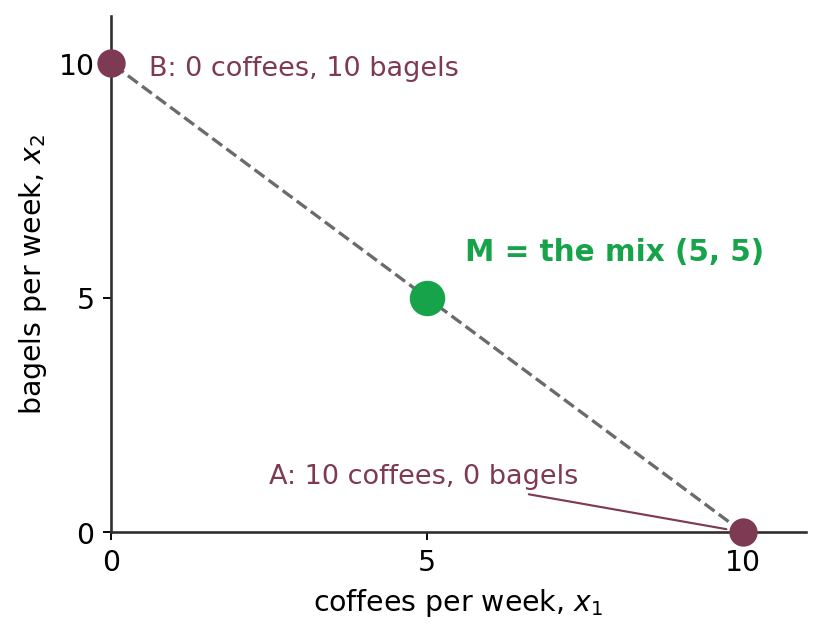

Four axioms, one ranking device, the canonical utility families — the primitives that drive every demand curve from Ch 5 onward.
Dr. Richeng Piao
Department of Economics
Northeastern University
Learning Objectives
By the end of this chapter, you will be able to…
4.1
State and motivate the four axioms — completeness, transitivity, monotonicity, convexity — and identify a real-world failure mode for each. (Bloom L3)
4.2
Construct indifference curves from a utility function and compute the MRS as \(MU_1/MU_2\) via implicit differentiation. (Bloom L4)
4.3
Prove that monotonic transformations of \(U\) preserve the MRS, and explain why this is the formal content of ordinal utility. (Bloom L4)
4.4
Apply the four canonical utility families — Cobb-Douglas, perfect substitutes, perfect complements, quasilinear — to compute MRS and predict whether the optimum is interior or corner. (Bloom L4)
4.5
Identify non-convex preferences from a utility function and connect lock-in markets (smartphone ecosystems, frequent-flyer status) to the convexity axiom. (Bloom L5)
Which one do you like more — and can you prove it?
vs
Taste is…
abstract
messy
subjective
invisible
No brain scanner prints a spreadsheet of what you want.
Why it matters
Netflix's home page or TikTok's For You page has to serve what you want before you know you want it.
It never sees the liking. It sees what you choose: watch, skip, replay.
the messy psychology of what people want
a ranking you can do calculus on
Today we build that bridge: four assumptions about choices, and a utility function that turns them into math.
What is knowing your taste worth? Netflix measured it
Zielnicki et al. (2025), The Value of Personalized Recommendations: Evidence from Netflix. The counterfactual: what if Netflix stopped personalizing?
Today's recommender — tuned to you
100 engagement today
Matrix factorization — patterns across everyone
96 −4%
Popularity only — just the most watched
88 −12%
Both alternatives also shrink the range of titles people watch.
That 12% is what encoding your ranking is worth, compared with showing everyone the hits.
Your home screen is a ranking
Stranger Things in the top slot, Our Planet 2nd in the row:
for you, as the model predicts it. The paper's own model is a utility function.
Where do demand curves come from?
The curve you drew in principles — and took for granted.
It is not a given. It is millions of people, each solving one problem:
the best bundle I can get
Today · Ch 4
what I want
preferences → \(U(x_1, x_2)\)
Next · Ch 5
what I can afford
the budget
You can't put an equals sign on psychology. First, four rules for how a consumer ranks:
1. Completeness
2. Transitivity
3. Monotonicity
4. Convexity
If choices follow the four rules (plus a technical one, continuity), a utility function \(U(x_1, x_2)\) exists that ranks them.
Pareto (1906) → Hicks & Allen (1934) → Debreu (1954)
§4.1–4.2 Preference Axioms & Utility
The rules preferences must obey — and the utility function that represents them
Axiom 1 — Completeness
1. Completeness2. Transitivity3. Monotonicity4. Convexityrules about the ranking, not about psychology
Completeness: any two bundles can be ranked, and indifferent counts.
Vote now: which do you prefer?
A iOS
—
B Android
—
Don't care
—
Notation
\(\succsim\) at least as good as \(\succ\) strictly preferred to \(\sim\) indifferent to
Allowed answers
\(A \succ B\)I prefer iOS
\(B \succ A\)I prefer Android
\(A \sim B\)Don't care: a real answer, same satisfaction
Ruled out: “I don't know” or “they can't be compared.”
Formally
For any bundles \(A, B\): \(A \succsim B\), or \(B \succsim A\), or both.
“Both” is exactly \(A \sim B\).
Completeness is unrealistic — so why assume it?
1. Completeness2. Transitivity3. Monotonicity4. Convexityrules about the ranking, not about psychology
Rank these
A a documentary on 14th-century Mongolian pottery B a reality show about competitive dog grooming in Florida
Honest answer: a blank stare. Never heard of either.
That blank stare is rational. Bounded rationality and limited information mean real completeness fails all the time.
But the app can't shrug. Netflix can't leave a blank space: its code has to put the pottery documentary above, below or next to the dog show. It acts as if your preferences are complete.
Your ranking, as the app holds it
1
Stranger Things
2
Our Planet
3
… and every title you have ranked
?
the pottery documentary: no place
?
the dog-grooming show: no place
Without completeness the ranking has holes: some pairs have no answer.
Economics does the same, for the same reason: no holes in the map, so the tools of calculus work. A little psychological realism, traded for a lot of mathematical power.
Brainstorm 1 — completeness on day one
You just made a Netflix account (or Spotify, or Instagram). It knows nothing about you, yet the home screen can't be blank: it must rank every title from second one. That is the cold-start problem. With a neighbour:
1 · Before your first choice
What can it rank you on when it has none of your data?
2 · Your first minute
What one thing should it ask you, or watch you do, first?
Example answers. (1) Borrow other people's rankings: what is popular where you live this week, what people who look like you picked. (2) Ask, or watch: Netflix has new members pick a few titles they like; Spotify asks for favourite artists; TikTok skips the question and watches what you finish or skip. (3) It still gets a niche taste or a shared account wrong, until your own choices take over.
The app assumes completeness from the start and fills the holes with other people's rankings. Your own choices replace them: revealed preference, slide 22.
1 min with a neighbour · 1 min to share
Axiom 2 — Transitivity
1. Completeness2. Transitivity3. Monotonicity4. Convexityrules about the ranking, not about psychology
Transitivity: rankings cannot loop. A loop turns you into a money pump.
The rule of logical consistency:
🍣
Sushi
≻
🍝
Pasta
≻
🍕
Pizza
Formally
If \(A \succsim B\) and \(B \succsim C\), then \(A \succsim C\).
⇒ you must prefer sushi to pizza. The transitive property from algebra, applied to desire: \(a > b,\ b > c \Rightarrow a > c\).
Now break it: \(A \succ B\), \(B \succ C\), but \(C \succ A\). A loop, and nothing is best. Next: what it costs.
The cost of a loop: the money pump
1. Completeness2. Transitivity3. Monotonicity4. Convexityrules about the ranking, not about psychology
Your preferences loop
\(A \succ B \succ C \succ A\)
A concert ticket · B restaurant gift card · C basketball ticket
Trade A for C (you prefer C)
−1¢
Trade C for B (you prefer B)
−2¢
Trade B for A (you prefer A)
−3¢
Every trade was an upgrade by your own ranking, and I can run the loop again, and again. Transitivity says the consumer is not a sucker.
of 70 lab subjects were strictly transitive across pairwise choices.
Guadalupe-Lanas, Cruz-Cárdenas, Artola-Jarrín & Palacio-Fierro (2020), Heliyon 6(3). Goods edible and non-edible, with and without a budget. Transitivity was more common for edible goods.
Also: Choi, Fisman, Gale & Kariv (AER 2007) score how consistent each subject's budget choices are: some are remarkably consistent, others persistently not.
Read with care: a small, lab-specific sample.
Heads Up 4.1
A modeling assumption, not a psychological law.
When a problem set says “assume preferences are transitive,” it asks you to assume the consumer is internally consistent. Real people sometimes are not.
Why keep it: in a loop nothing is best, so “maximize utility” has no answer (slide 12).
Maintained for Chs 4–13; relaxed in Ch 15, when uncertainty enters and prospect theory studies the violations.
The axioms are a benchmark that organizes a lot of choice behavior, not a law every consumer obeys.
Axiom 3 — Monotonicity
1. Completeness2. Transitivity3. Monotonicity4. Convexityrules about the ranking, not about psychology
Monotonicity: more is better, so indifference curves slope downward.
More is better
🍎🍊 Someone hands you 3 more apples: you are better off. To bring you back to where you were, I have to take away oranges.
So to keep you exactly as happy, more of one good has to come with less of the other: a trade-off. (In §4.3 this becomes a downward-sloping curve.)
Formally
\(A\) has at least as much of every good as \(B\), and strictly more of one \(\Rightarrow A \succ B\).
Equivalently \(MU_1 > 0\) and \(MU_2 > 0\) wherever we work.
The 43rd taco
🌮 The 1st is joy, the 5th is filling, the 43rd is suffering. That peak is a bliss point. We work before it: local non-satiation, where the next unit still helps.

Same idea: free textbooks at $0, and the pile still sits.
Not goods: bads
Pollution, toxic waste, commuting time: more of them lowers utility. Monotonicity is about goods; flip a bad into a good (clean air, time at home) and the framework works again (§4.5).
Axiom 4 — Convexity
1. Completeness2. Transitivity3. Monotonicity4. Convexityrules about the ranking, not about psychology
Convexity: a mix is at least as good as the extremes, so curves bow toward the origin.
Breakfast for a week: vote
A ☕10 🥯0
—
B ☕0 🥯10
—
M ☕5 🥯5
—
Suppose you like both and \(A \sim B\).
\((5,5) \succsim (10,0)\): the average is at least as good. If M won the vote, that is convexity: people crave variety.
Formally: for \(A \succsim B\), \(\lambda \in [0,1]\): \(\lambda A + (1-\lambda)B \succsim B\).

Three bundles. The mix M sits halfway between the extremes.
The big exception, later (§4.5.5)
Lock-in: all-Apple or all-Android beats a 50/50 mix. U.S. v. Apple (2024) argues about exactly this shape.
The Experiment That Taught Monkeys How to Use Money
Do Capuchin Monkeys Have Utility Functions?
Ordinal Utility
Chen, Lakshminarayanan & Santos (2006) taught capuchins to use tokens as currency, then watched them “shop” for jello, apples, grapes and cucumber. Felix's shopping illustrates the patterns we just axiomatized:
Chen, M. Keith, et al. “How Basic Are Behavioral Biases? Evidence from Capuchin Monkey Trading Behavior.” Journal of Political Economy, vol. 114, no. 3, 2006, pp. 517–37. https://doi.org/10.1086/503550.
• Preference ranking
100
≻
🍏
50
• More is better.
≻
🍏🍏🍏≻🍏🍏
• Preference transfer
If≻🫐≻🍏
⟶≻🍏
• Variety (convexity)
Felix already has ×10 and 🍏 ×0.
Which one would he prefer to receive next?
Taking the apple is a taste for variety: convexity. Diminishing MU is not one of our axioms.
Implication. If a monkey behaves consistently with utility theory, the theory describes something more fundamental than human sophistication.
Four rules in, one function out
The four rules let us write a utility function U(x₁, x₂). The number it prints is made up.
✓ Completeness
+
✓ Transitivity
+
✓ Monotonicity
+
✓ Convexity
=
\(U(x_1, x_2)\)
a utility score
What goes in: a bundle
\(x_1\) = coffees a week \(x_2\) = bagels a week
Quantities of goods and services. A bundle is just a list of amounts.
The twist: the number is made up. On its own it has no physical or psychological meaning.
\(U(\text{pizza}) = 100\), \(U(\text{salad}) = 50\). Is pizza twice as good? No. All you may say is that pizza beats salad. Why? Next.
utility function · bundle
The ordinal turn
To predict choices you need only the ranking, not how intense the pleasure is.
The old guard: cardinal
Jeremy Bentham, 1789
• Pleasure can be measured, like temperature on a thermometer.
• It has a unit, later called the util.
• Happiness is treated as a substance you could weigh.
The modern view: ordinal
Vilfredo Pareto, 1906
• Ophelimity: a good's power to satisfy a desire.
• To predict a market, you need only what people pick first, second, third.
• No thermometer for happiness required.
Hicks and Allen (1934) and Debreu (1954) made it rigorous: utility is an index that records which bundle wins.
cardinal · ordinal · ophelimity
How do we turn satisfaction into a number?
The old hope (1890s)
Utility was thought to be a real, measurable, cardinal scale — one that says how much better a bundle is, not just which one wins.
The modern attempt — neuroeconomics
Grounds choice in first principles — calories, water, warmth — and uses fMRI and PET scans to watch the brain deciding.
Measuring “satisfaction” directly — a century-old dream.
Two problems a cardinal scale can't solve.
• Comparing two different consumers' preferences may make no sense at all.
• There is no real-world measuring stick for how much more a consumer likes \(A\) than \(B\).
Ordinal = comparing rankings. Cardinal = comparing differences. Consumer theory needs only the first.
ordinal · cardinal · neuroeconomics
Stopwatch or podium?
Utility is a podium, not a stopwatch: only the order counts.
Cardinal
9.8 s 10.2 s
The stopwatch. The size of the gap means something.
Ordinal
2nd
1st
3rd
The podium. Only the order means something.
Scoring A and B as \(100\) and \(10\) says exactly what \(3\) and \(2\) say: A wins.
Any numbers that keep the order are an equally good utility function.
So pizza 100, salad 50 means only: pizza beats salad.
ordinal utility · index
Individual Objectives & Preferences
If you choose a when b was also affordable, you prefer a to b.
Economists assume consumers are rational — able to optimize their consumption given scarce resources.
“De gustibus non est disputandum” — there is no disputing about taste. Economics doesn't judge what you want; it takes preferences as given.
To predict choices we need a consumer's preferences: between any two products \(a\) and \(b\), which is preferred — and how does that ranking behave?
We can't read minds — but we can watch actions. “Actions speak louder than words.”
Principle of Revealed Preference. If a person chooses \(a\) over \(b\) when both are affordable, they must prefer \(a \succeq b\).
Our class: the slide 8 vote, live
iOS — Android —Don't care —
Each tap stated a ranking. The phone in your pocket revealed one. Add them up → market share.
Flawless? Of course not — but an extremely useful approximation. People tend not to leave money on the table.
revealed preference
A utility function \(u(\cdot)\) represents preferences
A utility function assigns numbers so that a is preferred to b exactly when u(a) > u(b).
🥒10
UTILITY FUNCTION
A bundle goes in; a number in subjective units — utils — comes out. Utility is well-being, not income.
You never have to measure a util. You only have to rank consistently — “I prefer pizza to salad” is enough.
\(u(\cdot)\) assigns numbers to bundles so that the numbers reproduce the ranking — and nothing more:
\[a \succ b \iff u(a) > u(b)\]
a
\(u(a) = 91\)
>
b
\(u(b) = 83\)
The \((\cdot)\) is a placeholder — \(x\), \(y\), grades, lattes, dollars. The function must also obey the four assumptions we come to shortly.
utility function · utils
How Much Utility Do You Get? (live class survey)
Type any three letters (NOT your initials), drag each slider to your “utils” rating right now — 1 = hate it, 100 = love it.
(1–3 letters)
☕Coffee
50
1 — hate it100 — love it
1255075100
🧋Boba
50
1 — hate it100 — love it
1255075100
0votes received
checking…
Press ↓ to see each student’s rating on a 2-D map · Press R to force-show class distribution
How Much Satisfaction Are You Getting Right Now From These Drinks?
Each dot is one student. Right = loves coffee. Up = loves boba.
Same for your ratings: only their order means anything.
Press ↑ to go back to the survey. Press R to refresh.
Utility — A Ranking System
U(A) = 100 and U(B) = 50 says only that A beats B. Not twice as good.
Utility is an abstract measure of the satisfaction a consumer gets from goods and services. The numbers are a bookkeeping device; the ranking is the economics.
Total utility
The total satisfaction from a whole bundle. This is what \(U(x_1, x_2)\) reports.
Marginal utility
The change in total utility from one more unit of one good. We compute it in §4.2 — and it is the ingredient the MRS is built from.
Misconception — “utility is measured in exact units.”
Hicks (1934): we only ever need an ordinal ranking. Total utils are an analytical fiction; the relative ranking is what's real.
\(U(A) = 100\) and \(U(B) = 50\) says only that \(A \succ B\).
Not that \(A\) is “twice as good,” nor worth two \(B\)s, nor that the consumer is twice as happy.
total utility · marginal utility (MU)
Application 4.1 — Spotify's Taste Profile
Multiply every score by 10, or take logs: not one recommendation changes.
100B+
Lifetime Discover Weekly streams since the 2015 launch
In selected markets Spotify is testing the Taste Profile: a user-visible readout of what the model believes about you across genres, moods and contexts — with sliders to push it up or down on each.
Those sliders are the striking part: the consumer is being handed a pencil and asked to edit their own utility function.
This is the closest thing in consumer tech to writing \(U(\cdot)\) on the page. The numbers don't measure happiness — but the ranking they induce picks the next track, the next playlist, the next ad slot.
Why ordinal is enough
Spotify cannot compare your love of jazz to your sister's love of country — across users the numbers mean nothing. Within a user, the ranking alone drives every decision the product makes.
A test you can run on it. Multiply every Taste Profile score by \(10\), or take logs of all of them. Not one recommendation changes. That invariance has a name — it is §4.4, and it is why economists stopped worrying about the units.
Reality — We Buy Bundles, Not Single Items
A consumer doesn’t pick one item — they pick a bundle: a combination of goods and services consumed together.
Which bundle? Depends on what kind of consumer you are. All feasible bundles must fit the budget in your pocket.
Revealed preference now works over bundles: choose \(A\) when \(B\) was also affordable, and \(A \succeq B\).
💵
Budget
$40
☕
Coffee
$4 each
🧋
Boba
$2 each
POTENTIAL CHOICES
(EACH COSTS $40)
Bundle
☕ Coffee
&
🧋 Boba
Bundle (V):
0 cups
20 cups
Bundle A:
2 cups
16 cups
Bundle B:
4 cups
12 cups
Bundle C:
6 cups
8 cups
Bundle D:
8 cups
4 cups
Bundle (P):
10 cups
0 cups
V = all boba · P = all coffee. Same $40, different lifestyles.
Poll #1: What exactly are \(x_1\) and \(x_2\)?
Take the utility function we just wrote, \(U(x_1, x_2) = x_1 x_2\), and the bundle
2 coffees and 3 bagels. Then \(U(2,3) = 6\).
In \(U(x_1, x_2)\), what do \(x_1\) and \(x_2\) stand for?
A) The prices of the two goods
B) The quantities of the two goods in the bundle
C) The utility from each good separately
D) The dollars spent on each good
Vote 60s
B — quantities, and nothing else
\(x_1\) and \(x_2\) are how much of each good is in the bundle — here 2 cups and 3 bagels.
\(U\) reads that pair and returns one number for the whole bundle. Nothing about money has entered the model yet.
Trap (A) prices. Prices are \(p_1, p_2\) and they arrive in Chapter 5. If \(x_1\) were a price, \(U\) would rise when coffee got more expensive.
Trap (C) utility per good. There is no “utility from coffee” sitting inside \(U\). Utility is a property of the bundle, not a sum of parts — \(U(2,3)=6\) is one number for the pair.
Trap (D) dollars spent. Spending on good 1 is \(p_1 x_1\). That is the budget line, next chapter. \(x_1\) on its own is just a count.
Marginal Utility
Marginal utility is the extra utility from one more unit of one good, holding the other fixed.
Marginal utility is the extra utility from one more unit of a good — the derivative of \(U\) with respect to that good, holding the other fixed.
For our coffee-and-boba consumer with \(U = x^{0.8} y^{0.2}\):
Power rule: bring the exponent down, subtract one. Each \(MU\) is decreasing in its own good — for this utility function. That is not an axiom: cube \(U\) and the \(MU\)s rise, while the MRS does not move.
\(MU\) is a partial derivative — differentiate in \(x\), hold \(y\) fixed. Math Refresher →
Press ↓ — plug in numbers: one cup of each, then one more.
marginal utility (MU) · partial derivative
Marginal Utility — A Numerical Look
Start with one cup of each, then add one more — which adds more utility?
One more coffee adds \(\approx 0.74\) utils; one more boba adds only \(\approx 0.15\). At this bundle, coffee is the better marginal buy — consistent with its larger exponent. (The calculus \(MU\)s at \((1,1)\): \(MU_x = 0.8\), \(MU_y = 0.2\) — the instantaneous rates the discrete jumps approximate.)
Your Turn — marginal utility at \((3, 3)\)
Compute it, then say what each number does and does not mean.
Same function as Poll #1
\(U(x_1, x_2) = x_1 x_2\)
\(x_1\) = coffees, \(x_2\) = bagels. Work with your neighbour.
1. What is \(U(3,3)\)? What does that number mean — and what does it not mean?
2. What are \(MU_1\) and \(MU_2\) at \((3,3)\)? What does each one mean?
2 min with your neighbour — press 2
marginal utility · ordinal
\(U(3,3) = 9\), and both marginal utilities are 3
\(U(3,3) = 3 \cdot 3 = 9\)
Means: \((3,3)\) beats \((2,3)\), which scored 6.
Does not mean: nine units of happiness, or one and a half times as happy.
\(MU_1 = x_2 = 3\), \(MU_2 = x_1 = 3\)
Means: at this bundle one more coffee and one more bagel add the same amount, so she would trade one for one: \(\mathrm{MRS} = 1\).
The catch, and it is the chapter in one line.
Rescale to \(V = 10U\): now \(MU_1 = MU_2 = 30\). The levels moved, the ratio did not — \(\mathrm{MRS}\) is still 1. Marginal utility in levels is as arbitrary as \(U\) itself; the ratio is what survives.
Step 2 — connect them \(\rightarrow\) one curve, \(\bar U = 7\)
Step 3 — one curve per level \(\rightarrow\) the map
An indifference curve is the set of all bundles giving the same utility: \((2,5)\), \((5,2)\), \((6,1)\) all yield \(U = 7\).
An indifference map stacks them — one curve per utility level. Farther from the origin = higher utility = preferred.
This utility is additive, so every curve is a straight line of slope \(-1\) — the perfect-substitutes case we formalize in §4.5. Cobb-Douglas curves bow.
indifference curve · indifference map
Characteristics of Indifference Curves
All four properties stem directly from the four assumptions about consumer preferences.
Slope downward; farther from origin = higher utility
Monotonicity — more is better
Curves never cross
Transitivity
Convex (bowed) toward the origin
Convexity — consumers like variety / diminishing MRS
Bundle \(B\) has the same fries as \(A\) but more burgers — and every bundle on \(U_2\) beats every bundle on \(U_1\).
Completeness, now as curves
Every pair ranked, so every bundle sits on some curve. Without completeness the curves have holes (slide 9).
Convexity, now as curves
The breakfast mix M (slide 15) sits on a higher curve: convex curves bow toward the origin. Lock-in (§4.5.5) flips it.
Why Indifference Curves Cannot Cross
Transitivity is what rules out crossing: two distinct indifference curves can never meet.
1. \(D = (4, 2)\) and \(F = (2, 4)\) lie on the same curve \(U_1\) ⇒ Joe is indifferent: \(D \sim F\).
2. Suppose a second curve \(U_2\) crosses \(U_1\) at \(F\) and also passes through \(E = (5, 2.5)\) ⇒ \(F \sim E\).
3.Transitivity: \(D \sim F\) and \(F \sim E\) \(\Rightarrow D \sim E\).
4. But \(E = (5, 2.5)\) has more of both than \(D = (4, 2)\) — one more basket of fries and half a burger ⇒ more is better ⇒ \(E \succ D\).
Contradiction. \(D \sim E\) and \(E \succ D\) cannot both hold — so the curves cannot cross.
The (impossible) case: \(D\) on \(U_1\), \(E\) on \(U_2\), both “tied” with \(F\). But \(E\) has more fries and more burgers than \(D\).
What a utility function looks like in 3D
The hill. More \(x_1\) and more \(x_2\) take you higher: height is utility. Drag to tilt it.
The problem. Doing calculus on a 3D hill is cumbersome. We want a flat map.
The cartographer's trick. Slice the hill at one altitude \(\bar U\), then drop that ring straight down. Press Slice, and move the slider to cut higher or lower.
An indifference curve is a contour line — every bundle at the same altitude. The red ring is the level you pick; the blue rings on the floor are the rest of the map.
What if more is worse? — economic "bads"
An economic "bad" is any item where more of it reduces utility — the mirror of a "good."
Boston housing — age is the “bad”
7 Lorette St West Roxbury
Built 1950 · ~76 yrs
41 Brown Ave Roslindale
Built 1885 · ~141 yrs
Goods raise value: bedrooms, A/C, updated kitchen. Bad: age — all else equal, more years of wear ⇒ lower price, less utility per house.
The fix: redefine the bad as the absence of bad
Swap age on the axis for newness. Two goods on the axes ⇒ the familiar downward-sloping ICs return — standard framework restored.
Bedrooms vs age (bad) — ICs slope up.
Bedrooms vs newness (good) — standard, downward-sloping ICs.
The Marginal Rate of Substitution
The MRS is how much of Y you give up for one more X and stay equally well off.
Indifference curves describe tradeoffs. How much of one good will you give up for one more unit of another and stay equally well off? The slope answers it.
\[\mathrm{MRS}_{XY} = -\frac{dY}{dX}\]
— the slope of the indifference curve at a point
What the equation says, in words
“How many burgers will she hand over to get one more basket of fries — right at this bundle — and end up neither happier nor unhappier?”
The slope of the curve at that point is the MRS.
\(dX\) — one more unit of \(X\) (a basket of fries)
\(dY\) — the units of \(Y\) given up (burgers) — negative along the curve
marginal rate of substitution (MRS)
The Slope of an Indifference Curve is the MRS
At \(A = (2,\, 4)\)
slope \(= -2\), so \(\mathrm{MRS}_{FB} = 2\). Steep — few fries, so one more basket is worth 2 burgers.
At \(B = (4,\, 2)\)
slope \(= -0.5\), so \(\mathrm{MRS}_{FB} = 0.5\). Shallow — fries are plentiful, so the same basket costs only half a burger.
Move down and right along the curve and the slope flattens. That declining trade-off rate is the diminishing MRS — and it is exactly what “bowed toward the origin” means.
The orange legs are the trade itself: \(\Delta B\) burgers surrendered per \(\Delta F\) baskets gained.
Calculus Corner 4.1 — deriving the MRS
Along an indifference curve dU = 0, so MRS = MU₁ / MU₂.
At \(A = (2,\,4)\) the slope is \(-2\): one more basket of fries costs her two burgers. What does that mean for her utility?
Gain on one side, loss on the other, and the beam stays level.
It generalizes. For any level set \(f(x_1, x_2) = c\), the slope is
\(-\dfrac{\partial f/\partial x_1}{\partial f/\partial x_2}\).
We use this exact trick again in Ch 7 to get \(\mathrm{MRTS} = MP_L/MP_K\), and in Ch 8 for the cost-minimizing tangency.
Total differentiation — when two things move at once. Math Refresher →
total differentiation
What the steepness of an indifference curve tells you
Two people, the same two goods, very different maps. Because \(\mathrm{MRS} = MU_X/MU_Y\), a curve's steepness at a point is a direct readout of which good she values more at the margin — and a whole family of curves describes one consistent personality.
Steep — the streamer
She hands over several concert tickets for one more month of Spotify. Large \(MU_X\) relative to \(MU_Y\) — streaming is the precious good at the margin.
Flat — the gig-goer
She needs many extra months of Spotify before parting with a single ticket. Small \(MU_X\) relative to \(MU_Y\) — live shows are the precious good.
Walkthrough 4.1 — Mia's coffee + boba MRS
☕ Mia's week. She buys \(x_1\) coffees and \(x_2\) boba teas. She cares about both equally (same exponent on each) with diminishing returns on each. This week: 4 coffees, 9 bobas.
The consumer is willing to give up 2.25 units of \(x_2\) for one (small) more unit of \(x_1\) at this bundle.
Diminishing MRS in action. Move along the IC toward more \(x_1\): \(x_1\) up, \(x_2\) down, ratio \(x_2/x_1\) falls. The MRS falls. Convexity is doing the work.
For symmetric Cobb-Douglas, the MRS depends only on the ratio \(x_2/x_1\) — not on the levels separately. We'll use this property all of Ch 5.
Press ↓ — the Step 1 → Step 2 algebra, spelled out (exponent-rule refresher).
Our MRS is always positive: MRS = MU₁/MU₂. The slope is negative.
Different textbooks use different sign conventions: \(\mathrm{MRS} = dx_2/dx_1\) (negative), \(\mathrm{MRS} = -dx_2/dx_1\) (positive, our choice), or \(|\text{slope}|\). Mix conventions and your tangency condition in Ch 5 will produce wrong-signed price ratios.
2316 convention (this book)
\(\mathrm{MRS}_{1,2} = MU_1/MU_2 > 0\). Always positive when both \(MU_i > 0\) (monotonicity).
Sanity rule
Tangency in Ch 5: \(\mathrm{MRS} = p_1/p_2\). Both sides positive. If yours doesn't match, your sign is the first thing to check.
Estimating ICs from real-world data — Nevo's cereals
Aviv Nevo's hedonic analysis of the U.S. breakfast-cereal market: treat each cereal as a bundle of characteristics (sugar, fiber, fat, calories) and back out preferences from how demand shifts with price across consumers.
Needs 1.24 g sugar to swap for losing 1 g fiber. Strong preference for fiber ⇒ steep ICs.
David, 20 — \(\mathrm{MRS}_{F,S} = 0.57\)
Needs only 0.57 g sugar to swap for losing 1 g fiber. Weaker preference for fiber ⇒ flat ICs.
Source: Nevo (2001), Econometrica — "Measuring market power in the ready-to-eat cereal industry."
§4.4 Monotonic Transformations
The formal content of ordinal — cancellation, not philosophy
Monotonic Transformations — Why Bother?
Monotonic transformation — any strictly increasing operation: if \(U\) gets bigger, \(V\) must get bigger. The podium is unchanged.
Real life
Celsius → Fahrenheit \((F = 1.8C + 32)\): every number changes, “which day was hotter” never does.
Your grade curve. Add 5 points to everyone, or scale the whole column — as long as it is strictly increasing, nobody's rank in the class moves.
Why do we care?
Utility is ordinal, so the exact numbers are ours to choose: take \(\ln\) of a Cobb-Douglas and a product becomes a sum, which is how Ch 5 does the algebra.
Nothing observable moves: Calculus Corner 4.2 cancels \(g'(U)\) and leaves the MRS alone.
monotonic transformation
Strictly increasing transformations represent the same preferences
Any strictly increasing transformation of U represents the same preferences.
Define \(V(x_1, x_2) = g(U(x_1, x_2))\), where \(g: \mathbb{R} \to \mathbb{R}\) is strictly increasing (\(g'(U) > 0\)).
\(V\) represents the same preferences as \(U\): \(V(A) > V(B) \iff U(A) > U(B)\).
One-line proof: \(g\) is strictly increasing, so \(V(A) = g(U(A)) > g(U(B)) = V(B)\) iff \(U(A) > U(B)\). The ranking is preserved by definition of "strictly increasing."
Example transformations that all represent the same preferences as \(U\): \(\quad U + 7, \quad 2U, \quad U^3, \quad \ln U, \quad e^U, \quad \sqrt{U}\) (when \(U \geq 0\)).
monotonic transformation
Calculus Corner 4.2 — The chain-rule cancellation
Compute the MRS from \(V = g(U)\) using the chain rule:
The cancellation, not the philosophy, is the operational content of "ordinal." Every observable object in consumer theory — demand curves, welfare measures, comparative statics — is invariant to the choice of \(g\).
Walkthrough 4.2 — Mia again: \(U = x_1 x_2\) vs \(V = \ln(x_1 x_2)\)
☕ Same Mia. Her preferences over coffees \(x_1\) and bobas \(x_2\) can be written as \(U = x_1 x_2\) or as \(V = \ln(x_1 x_2) = \ln x_1 + \ln x_2\). Does swapping \(U\) for \(V\) change anything she would actually do? Check at \((4, 9)\).
Both deliver \(\mathrm{MRS} = 2.25\). The numbers assigned to \((4, 9)\) differ — \(U(4,9) = 36\) vs \(V(4,9) = \ln 36 \approx 3.58\) — but the indifference map and MRS are identical.
Practical use: in Ch 5 we routinely log Cobb-Douglas to make the algebra cleaner. The economics doesn't change.
A log change is roughly a percentage change — the other reason economists reach for logs. Math Refresher →
Heads Up 4.3 — The ordinal/cardinal test
Whenever you're tempted to interpret a utility number as a quantity of happiness, ask: Would my conclusion change if I replaced \(U\) with \(\ln U\), or \(U^2\), or \(5U + 3\)?
Conclusion changes \(\Rightarrow\) you used cardinal information consumer theory doesn't have. Conclusion stays the same \(\Rightarrow\) you're safe.
Almost every prediction in this book passes the test. Welfare measures (CV/EV in Ch 6), demand curves, comparative statics, expected utility (Ch 15) — all invariant to monotonic transformation.
The exception:interpersonal utility comparisons. "Is your love of jazz greater than mine?" The theory has nothing to say. Welfare economics adds extra structure when needed.
Poll #2: Same preferences?
Original utility: \(U(x_1, x_2) = x_1 x_2\). Which of the following represents the same preferences as \(U\)?
A) \(V_1 = U + 7\)
B) \(V_2 = -U\)
C) \(V_3 = (\ln U)^2\), restricted to \(U > 1\)
D) Both A and C
90 sec to vote
Answer: D — Both A and C
U + 7 and (ln U)² for U > 1 keep the ranking; −U reverses it.
\(V_1 = U + 7\): strictly increasing in \(U\). Same preferences. ✓
\(V_3 = (\ln U)^2\) on \(U > 1\): for \(U > 1\), \(\ln U > 0\) and \((\ln U)^2\) is strictly increasing in \(U\). Same preferences. ✓
\(V_2 = -U\): strictly decreasing. Inverts the ranking. Different preferences.
Trap (B): "Negating" looks like a transformation but flips the ranking. Always check that \(g\) is strictly increasing, not just "smooth" or "monotonic in some sense."
§4.5 Canonical Utility Families
Cobb-Douglas, perfect substitutes, perfect complements — then quasilinear, and where convexity fails
Your own Cobb-Douglas
Two things you buy every week. Then split a typical week's spending between them.
Whatever share you put on the first good is your \(\alpha\).
50% on x50% on y
U = x0.50 y0.50
90s
Read one back
Press Draw for a random student.
Utility Functions in the Wild — Cobb-Douglas
Three bundles of \((x, y)\) = (coffee, boba). Pick whichever bundle gives you the most “utils.”
☕
1 cup Coffee (x)
+
🧋
1 cup Boba (y)
Bundles
• a = (1, 2)
• b = (2, 2)
• c = (2, 1)
Utility Function
U(x, y) = x0.8 · y0.2
Cobb-Douglas form — coffee weighted 4× more than boba at the margin.
Utils
• Ua = 1.15
• Ub = 2.00
• Uc = 1.74
Ranking: b ≻ c ≻ a. Bundle b (2 coffee + 2 boba) is the favorite of this Cobb-Douglas consumer.
A household spends about a third of its income on housing, two-thirds on everything else — and the split barely budges when rent or income moves. Some of both, traded smoothly, at a constant budget share:
Memorize this expression. It appears in roughly every Walkthrough in the rest of Part II — and it separates cleanly into two factors:
Taste — fixed
\(\dfrac{\alpha}{1-\alpha}\)
the exponents; the same at every bundle
Bundle — moves
\(\dfrac{x_2}{x_1}\)
what you happen to be holding now
Fractional exponents behave like any other — power rule, unchanged. Math Refresher →
Walkthrough 4.3 — Housing vs everything else at \((8, 12)\)
🏠 A household's monthly budget. \(x_1\) = housing (rent units) takes about 1/3 of income; \(x_2\) = everything else takes about 2/3. Evaluate at \((8, 12)\): 8 units of housing, 12 of everything else.
\(U(x_1, x_2) = x_1^{1/3} x_2^{2/3}\) — consumer values \(x_2\) twice as much as \(x_1\)
Sanity check. Symmetric Cobb-Douglas at the same bundle gives \(\mathrm{MRS} = x_2/x_1 = 12/8 = 1.5\). Our asymmetric \(\alpha = 1/3\) cuts that in half — consumer cares less about \(x_1\), so willing to give up less \(x_2\) to get more \(x_1\).
Interpretation. At \((8, 12)\), the consumer would give up \(0.75\) units of \(x_2\) for one (small) more unit of \(x_1\). They'd want a price ratio \(p_1/p_2 \le 0.75\) to spend more on \(x_1\) at the optimum.
Theory and Data 4.1 — Cobb-Douglas in BLS data
A signature prediction of Cobb-Douglas: the consumer spends a constant fraction \(\alpha\) of income on \(x_1\) — independent of income, independent of prices. (We derive this in Ch 5.)
Approximately Cobb-Douglas
Housing share, transportation share — move within only a few percentage points of the average across BLS CES income quintiles.
Where it fails: food
Engel's law — food's share falls steadily as income rises. Named for Ernst Engel (Prussian statistician, 1857).
Cobb-Douglas is a useful approximation for some categories, a deliberately imperfect approximation for goods with strong income effects. Ch 6 builds the formal apparatus to talk about how demand depends on income.
Source: BLS Consumer Expenditure Survey (https://www.bls.gov/cex/tables.htm). Engel (1857), Die Productions- und Consumtionsverhältnisse des Königreichs Sachsen.
Utility Functions in the Wild — Perfect Substitutes
Some goods swap 1-for-1. For many purposes, the consumer just cares about total citrus — not which variety.
1 Tangerine (x)
+
1 Orange (y)
Bundles
• a = (1, 2)
• b = (2, 2)
• c = (4, 3)
Utility Function
U(x, y) = x + y
Perfect substitutes (linear)
Utils
Ua = 3
Ub = 4
Uc = 7
Only the ranking of utility numbers matters — not the numbers themselves.
In the wild:87-octane at two stations; USDT vs USDC while both pegs hold. \(\mathrm{MRS} = 1\), so the cheaper one takes the whole order.
Perfect substitutes — constant trade-off rate
Perfect substitutes: the MRS is a/b everywhere, so the curves are straight lines.
Sometimes only the total matters — Duracell 🔋 or Energizer AAs: you want four working batteries.
\((6,0)\), \((3,3)\), \((0,6)\): six working batteries either way.
\[U(x_1, x_2) = a x_1 + b x_2, \qquad a, b > 0\]
\(MU_1 = a, \quad MU_2 = b\) \(\mathrm{MRS}_{1,2} = a/b\) — the same everywhere.
A constant MRS is what makes the curves straight and parallel, slope \(-a/b\).
Ch 5 preview. Perfect substitutes give corner solutions: spend it all on whichever good has the higher \(MU/p\). Tangency fails — the two slopes are either equal everywhere or unequal everywhere.
perfect substitutes
Walkthrough 4.4 — Store-brand vs national-brand sugar
The question
A shopper buys sugar: \(x_1\) = pounds of store brand, \(x_2\) = pounds of national brand, with
\(U(x_1, x_2) = 2x_1 + 3x_2\).
Find the MRS — and check whether it changes as the shopper's basket changes.
Step 1 — partials:
\(MU_1 = 2, \quad MU_2 = 3\) — both constant
Step 2 — ratio:
\(\mathrm{MRS}_{1,2} = 2/3 \approx 0.667\)
Step 3: Same answer at \((1, 1)\), \((10, 1)\), \((1, 10)\), \((100, 100)\). The MRS does not depend on the bundle.
The consumer cares 1.5 times more about a pound of national-brand than store-brand. They'd give up only \(2/3\) of a pound of national-brand to get one extra pound of store-brand — regardless of how much they already have.
Optimization preview. If \(p_1/p_2 < 2/3\): spend all on \(x_1\) (store-brand cheap relative to value). If \(p_1/p_2 > 2/3\): spend all on \(x_2\). If \(p_1/p_2 = 2/3\) exactly: anywhere on the budget line is optimal.
Application 4.2 — Stablecoins as near-perfect substitutes
USDC and USDT each promise dollar redemption: hold one token, claim one dollar. Most of the time, traders move value across exchanges and DeFi protocols treating them as interchangeable, with \(\mathrm{MRS} \approx 1\).
March 2023 SVB collapse. Circle (USDC issuer) held a portion of reserves at Silicon Valley Bank. USDC briefly traded as low as \$0.87. For a few hours, traders rushed to sell USDC for USDT or other dollar instruments — even at a 13% discount.
\$0.87
USDC bid floor during the March 11–12, 2023 SVB de-pegging
"Perfect substitutes" is a limiting case, not a description of any real market. Fast credible redemption \(\Rightarrow\) the model fits. Doubt about redemption \(\Rightarrow\) it breaks.
Utility Functions in the Wild — Perfect Complements
Some goods only work together. One bicycle needs one frame AND two wheels — extras of either alone add zero utility.
1 Bicycle Frame (x)
+
1 Set of Wheels (y)
Bundles
• a = (1, 2)
• b = (2, 2)
• c = (4, 3)
Utility Function
U = min(x, y)
Perfect complements (Leontief)
Utils
Ua = 1+ leftover
Ub = 2no leftover
Uc = 3+ leftover
Other examples: left + right shoes; peanut butter + bread; GPU + monitor. Adding more of just one side adds nothing.
In the wild:Console and cartridge — five consoles and one game still plays one game. Jet engine and its certified maintenance, sold as power by the hour.
Perfect complements — fixed proportions
Perfect complements: only the scarcer good helps, so the curves are L-shaped.
The mirror image: goods that are useless without each other — a left and a right shoe. What matters is whichever you have less of.
Figure 4.10 — at \(A\), two of each. Adding a right shoe alone (\(B\)) leaves utility unchanged; only \(D\) — another left and right — reaches \(U_3\).
\[U(x_1, x_2) = \min(a x_1, b x_2), \qquad a, b > 0\]
L-shaped curves, with the corner along \(a x_1 = b x_2\). Off the corner the abundant good's marginal utility is zero — only the scarce good helps.
MRS at the corner is undefined (a kink). On the horizontal arm \(\mathrm{MRS} = 0\); on the vertical arm \(\mathrm{MRS} \to \infty\). Non-smooth utility.
Real near-complements: console + flagship game (Switch + Tears of the Kingdom), insulin pump + infusion sets, aircraft engine + maintenance contract.
perfect complements · kink
Walkthrough 4.5 — Hot dogs & buns at \(\bar U = 3\)
🌭 You’ve lived this: hot dogs come in packs of 10, buns in packs of 8 — so you can only build \(\min(10, 8) = 8\) complete hot dogs. Two lonely dogs, zero extra utility. Here \(x_1\) = hot dogs, \(x_2\) = buns.
\(U = \min(x_1, x_2)\), indifference curve at \(\bar U = 3\)
Three regions of the IC:
• Horizontal arm: \(x_1 \geq 3, x_2 = 3\). Adding more hot dogs doesn't help.
• Vertical arm: \(x_1 = 3, x_2 \geq 3\). Adding more buns doesn't help.
• Corner: \((3, 3)\). Both at 3.
MRS values:
• At \((5, 3)\) on horizontal arm: \(\mathrm{MRS} = 0\)
• At \((3, 5)\) on vertical arm: \(\mathrm{MRS} = \infty\)
• At corner \((3, 3)\): undefined (kink)
\(\mathrm{MRS} = 0\) on the horizontal arm captures the perfect-complements intuition: extra hot dogs are useless without matching buns.
Ch 5 preview. The optimal bundle always sits on the corner locus \(a x_1 = b x_2\), regardless of prices. The pricing question becomes "how far up the corner locus does the budget take us?" — not "where does \(\mathrm{MRS} = p_1/p_2\)?"
Application 4.3 — Console + flagship title
2017 — Nintendo launches Switch. Hardware sales modest untilThe Legend of Zelda: Breath of the Wild ships alongside.
For a substantial slice of consumers, the console was the title. The whole purchase made sense only paired.
2023 — Tears of the Kingdom repeats the pattern. Strong indirect network effects in console markets: hardware adoption and software supply move together.
When the model fits
The L-shape is an idealization. Real consumers do trade off hardware and software at some margin (some buy hardware first hoping titles arrive). But the sharp non-linearity — having neither is much worse than having both — is a real feature.
A launch without a flagship complementary title routinely underperforms one with. Industry analytics keep estimating the lift, and they keep finding it.
The Curvature of Indifference Curves
(a) Almost straight → close substitutes
Decaf lattes and decaf coffees are nearly interchangeable: the curves bow only slightly, so the MRS changes slowly. Near-SUM.
(b) Very curved → strong complements
Tortilla chips and guacamole pull hard together: the curves bow sharply, so the MRS changes fast. Near-MIN.
Perfect substitutes and perfect complements are the endpoints: curvature is a dial, not a switch, and most real goods sit in between.
Press ↓ — curvature can also change within one consumer's map.
The Same Consumer Can Have Different Shapes
Figure 4.11 — 🍌 bananas vs 🍓 strawberries.
Initially, for low levels of utility \((U_A)\), bananas and strawberries might be substitutes — the curve is gentle, the consumer just wants fruit.
As utility increases \((U_B)\), the consumer might prefer a variety of fruit in their diet more than initially — the curve bows sharply, balance now matters.
Curvature can change along one consumer's map — preferences need not look the same everywhere.
Your Turn — A Neutral Good (Sofia's YouTube vs TikTok)
Sofia watches \(Y\) hours of YouTube and \(T\) hours of TikTok. More YouTube ⇒ happier. TikTok is neutral — doesn't move utility. Find the IC map and the MRS at \((T, Y) = (1, 1)\).
Step 1 — vary \(Y\) at fixed \(T\):
\(B = (1, 2)\) has more YouTube than \(A = (1, 1)\) ⇒ \(B \succ A\). Higher \(Y\) sits on a higher IC.
Step 2 — vary \(T\) at fixed \(Y\):
\(C = (2, 1)\) gives Sofia more TikTok than \(A\), but \(T\) is neutral ⇒ \(C \sim A\). Same for \(D, E\) at \(Y = 1\).
Step 3 — the shape: ICs are horizontal lines. \(A, C, D, E\) all sit on \(U_1\); \(B, F\) sit on the higher \(U_2\).
MRS at \((1, 1)\) is the slope of \(U_1\), which is \(0\). \(\mathrm{MRS}_{T, Y} = 0\) — Sofia gives up zero YouTube for an extra hour of TikTok.
Horizontal ICs — the signature of a neutral good.
From a Real Consumer to a Quasilinear Function
1 — Start from a real situation
Think about cups of coffee ☕. The first cup of the day is a lifesaver; the second is nice; by the third you barely care. But the money you spend on everything else — each extra dollar is just as useful as the last.
2 — Why this is "quasilinear"
One good (coffee) has diminishing marginal utility — curved
"Everything else" is just money — constant marginal utility, perfectly linear
Hand the consumer \(\$20\) more and they don't buy more coffee — no income effect on the curved good
3 — Write it as a function
\[U(x_1, x_2) = v(x_1) + x_2\]
\(x_1\) = coffee, with \(v\) concave (\(v' > 0,\ v'' < 0\)); \(x_2\) = money for everything else, entering linearly.
In the wild: with \(x_2\) = money, \(MU_2 = 1\) and \(\mathrm{MRS} = v'(x_1)\) is in dollars: \(v' = 1.5\) means $1.50 for one more unit — a trade-off with a price tag.
Quasilinear — one good linear, one good not
Quasilinear: the MRS depends only on x₁, so there is no income effect on x₁.
Indifference curves are vertical translations of each other — same shape, just shifted up in \(x_2\).
Why it is so useful: no income effect on \(x_1\), because \(x_2\) absorbs every wealth change, so Ch 6's Slutsky decomposition is one line. Read \(x_1\) as the good of interest and \(x_2\) as money for everything else.
quasilinear
The cleanest non-convex example
If the midpoint scores below the extremes, preferences are not convex.
📱 Alex's smartphone world. \(x_1\) = hours a week on iOS apps, \(x_2\) = hours on Android. Going all-in on one platform compounds the value of everything in it; a 50/50 split strands Alex's messages, files and payments across two walled gardens that don't talk.
\(U(x_1, x_2) = x_1^2 + x_2^2\) at \(\bar U = 25\)
Convexity test. Averages should be \(\succsim\) extremes. Here the midpoint scores \(12.5\) against \(25\) — below both corners, so the average loses. Violated.
Level sets bow away from the origin. The dashed line joins two indifferent bundles — and its midpoint lands on a lower curve.
Heads Up 4.4 — "Convex preferences" vs. "convex function"
Convex preferences come from a quasi-concave U, not a convex U.
A perennial terminology trap. They are inverses in this context.
Convex preferences
Upper contour set is convex; ICs bow toward the origin.
Math language: \(U\) is quasi-concave (or concave).
Convex function \(U\)
Level sets bow away from the origin (e.g., \(U = x_1^2 + x_2^2\)).
Represents non-convex preferences!
Math Appendix A.7 sorts out the formal definitions of concavity, convexity, and quasi-concavity.
quasi-concave
What this chapter sets up
Ch 5
Constrained choice + Lagrangian. Tangency \(\mathrm{MRS} = p_1/p_2\); Marshallian demand for Cobb-Douglas. Corner solutions where the tangency rule fails.
Ch 6
Slutsky decomposition. The MRS is one input. A premium increase splits into substitution and income effects — and under quasilinearity the income effect is zero.
Ch 7
Production functions + MRTS. Same implicit-differentiation trick we used to get the MRS. \(\mathrm{MRTS} = MP_L/MP_K\).
Ch 15
Expected utility. Preferences over health states with risk; reference-dependent prospect theory bends ordinal preferences in surprising ways.
Ch 16
Adverse selection. High- and low-risk consumers with different preferences shop the same exchange. Rothschild-Stiglitz separating menu.
Key Takeaways
Four axioms. Completeness, transitivity, monotonicity, convexity. Each does specific geometric work; each has a real-world failure mode.
Utility is ordinal. Any strictly increasing transformation \(V = g(U)\) represents the same preferences and yields the same MRS. The cancellation, not philosophy, is the operational content.
The MRS is a derivative. \(\mathrm{MRS} = MU_1/MU_2 > 0\). One equation bridges geometry and calculus — and we'll reuse it for MRTS in Ch 7.
Non-convexity is real. Lock-in markets — smartphone ecosystems, frequent-flyer status — produce non-convex preferences. Tangency rule fails; corners win.
Bridge to Ch 5. The MRS is one half of the optimum; the price ratio is the other. They meet at the tangency: \(\mathrm{MRS} = p_1/p_2\).
The Netflix ranking and Spotify's Taste Profile both encode an ordinal ranking of bundles — nothing more. Today we wrote the page-and-pencil version. Ch 5 picks the optimum.


 +
+